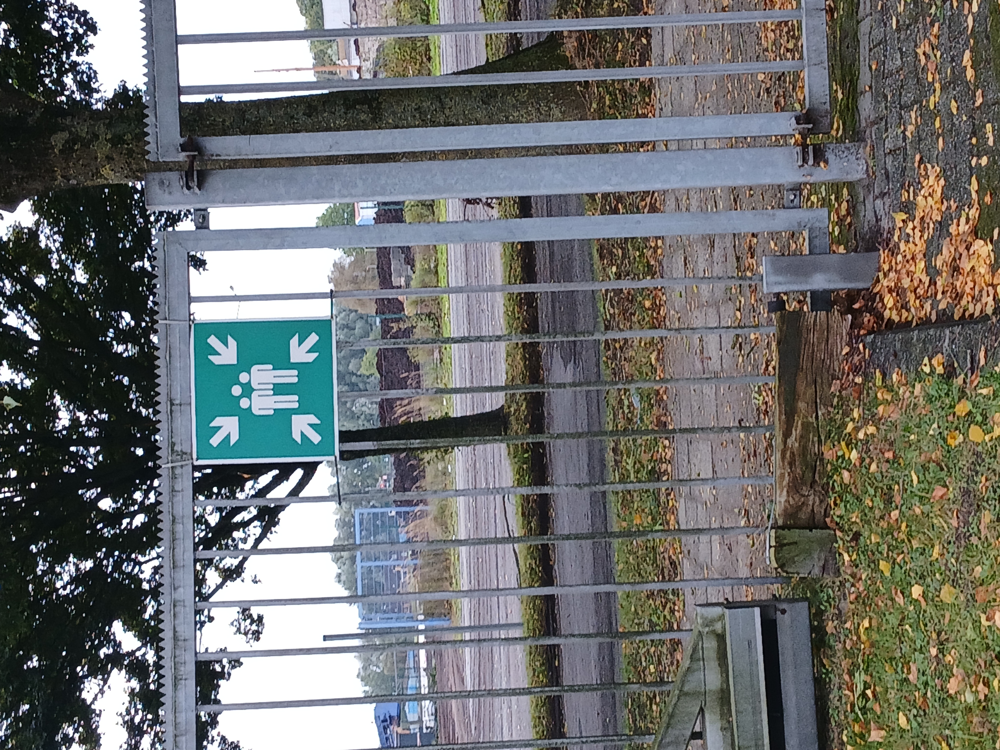

Sammelpunkt Das abgebildete Zeichen kennzeichnet einen Sammelpunkt. Dieser wird im Falle einer Evakuierung oder eines Notfalls genutzt, damit sich alle Personen an einem festgelegten Ort versammeln können. Nach dem Verlassen eines Gebäudes begeben sich die betroffenen Personen zum Sammelpunkt und warten dort auf weitere Anweisungen. Gleichzeitig kann überprüft werden, ob alle Personen das Gebäude sicher verlassen haben. Das Symbol zeigt mehrere Personen, die von Pfeilen umgeben sind. Diese verdeutlichen, dass Menschen aus verschiedenen Richtungen zu diesem Punkt kommen und sich dort sammeln sollen. Auch wenn ein solches Zeichen im Alltag oft wenig Beachtung findet, kann es in einer Notfallsituation eine wichtige Orientierungshilfe sein.
? Zurück zur Navigation